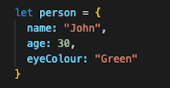

JS Fundamentals

What is Javascript and how is it related to HTML & CSS?
JavaScript is a programming language that allows you to implement complex features on web pages. When a website is interactive with pop-ups or has a form to complete then Javascript is most likely involved. HTML, CSS and JavaScript work together to form the front-end design of a website by applying information that affects the content, style and interactivity of a site.
To better explain the relationship between HTML, CSS and JavaScript I like to think of it a bit like a house.
HTML - This is like the brueprint of a house, the plans. This is essential as without this no liveable house can be built.
CSS - This is like the interior and exterior decorating such as colours of the walls and carpets.
JavaScript - This is like any extra bells and whistles of a house, they are not exactly neccesary for the house to function but they enhance the house such as electronic keypad entry or built in speakers.
Control flow
Control flow is the order in which the computer executes statements in a script. The computer reads this script in order from the first line of code in the file to the last line, unless it is told otherwise.
Loops
Instead of completing a block of code over and over manually, Loops can be used. Loops are a way to run through the same code block a specific number of times. Loops have conditions placed to run until it has reached a certain time to stop, a loop will continue to run until the defined condition returns true or false. If there is no condition to stop then a loop can be infinite, although this is not best practice as it's not very good for our browsers.
The difference between accessing data from arrays and objects
Both objects and arrays are common ways to store data in JavaScript. Objects represent a data type that can be used to store a collection of data (rather than just a single value). Arrays are a type of variable that can also be used to store a list of values.
Arrays
Square brackets [] are used to show that the content within the brackets is an array. An array is data within the square brackets each separated by a comma. The data within the array is represented by an index number where is sits within the square brackets. This index always begins at 0, so the first item in an array will be index 0.
Objects
Objects are used to store data, the data can be stored in different properties listed within the object. Properties can include different data types such as strings, numbers or booleans etc. Objects are a useful way to store different types of data that relate to one object.
An example of an object, could be a person. An object that is created for a person may include the properties of name, age, hair colour etc.
Functions
A function in JavaScript is similar to a procedure—a set of statements that performs a task or calculates a value, but for a procedure to qualify as a function, it should take some input and return an output where there is some obvious relationship between the input and the output.
The DOM
The Document Object Model (DOM) is a programming interface for web documents. The DOM defines the logical structure of documents and the way a document is accessed and manipulated. After the browser reads an HTML document, it creates a structure (like a family tree structure) and defines how the content can be accessed. You can interact with the DOM by using DevTools, DevTools are built directly into the browser and can be used to inspect elements of HTML, CSS, and JavaScript.